Imagery Processing
Center for Geospatial Analytics at North Carolina State University
Objectives
- Understand the photogrammetric data processing as a multistep process;
- Indicate data needed for orthophoto/DTM generation from aerial imagery;
- Understand the difference between interior and exterior orientation of the photo;
- Describe the workflow of geoprocessing of aerial imagery in designated software (Agisoft Metashape Professional);
Photogrammetric process

Photogrammetric process
Data processing

UAS data
What do we get after the flight mission?
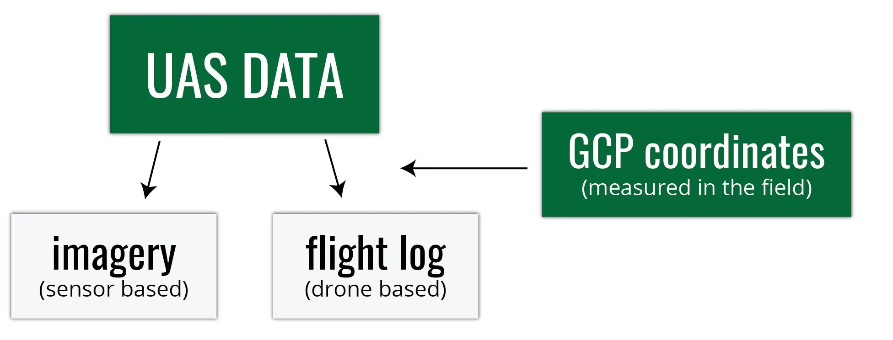
Digital imagery

- usually on the camera SD card
- can be geotagged (depends on camera)
- Camera lens location is “written into” each photo’s EXIF file
- this is not necessarily the case…
Flight log
- Onboard Inertial Measurement Unit (IMU) accurately measures the orientation of airborne sensors,
- Information is logged into a text file (flight log),
- Contains elements of exterior orientation (EO, more later in the lecture)
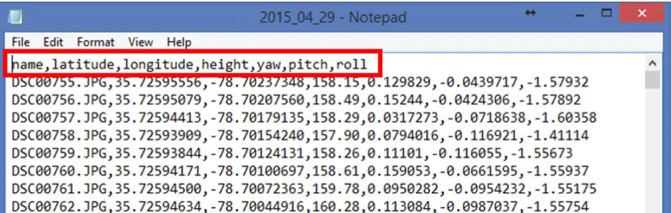
GCP coordinates
- Measured by GPS coordinates of the panels set before the flight
- Photo ID points (distinguishable ground features) can be surveyed later on
- It is important to know the GCPs coordinate system (spatial reference system)

Spatial reference system
- Defines how the two-dimensional, projected map in your GIS is related to real places on the earth
- It is crucial to know what is your data reference system!
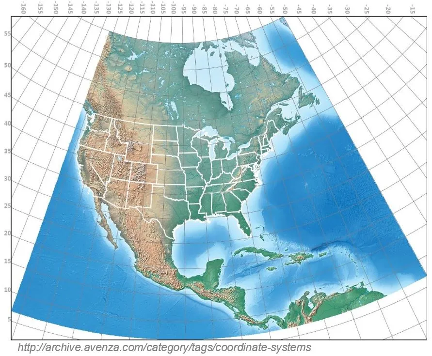
- There are global map projections, but most map projections are created and optimized to project smaller areas of the earth’s surface
- There are two different types of coordinate reference systems: Geographic Coordinate Systems and Projected Coordinate Systems
- Spatial reference list (EPSG codes for coordinate reference systems)
UAS data processing outputs
What do we get after processing the data?
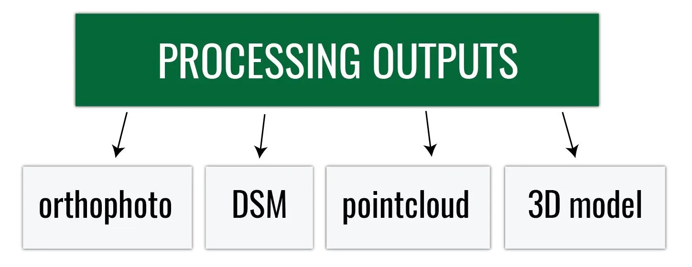
Orthophoto
- Aerial imagery geometrically corrected (“orthorectified”) such that the scale is uniform
- Raster: consists of red, green, and blue bands

Digital Surface Model
- DEM/DTM - Digital Elevation Model / Digital Terrain Model
- Representation of a terrain’s elevation
- Bare-earth raster grid
- DSM - Digital Surface Model
- Representation of a visible surface
- Captures the natural and built features on the Earth’s surface

Pointcloud
- Representation of the external surface of an object
- Set of vertices in a three-dimensional coordinate system
- Vector or raster?
- Dale Lutz once said, “point cloud is a badly behaved raster”
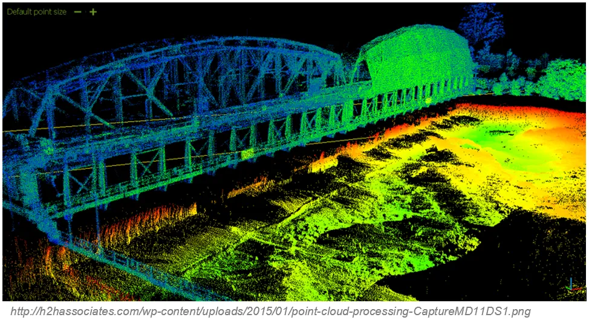
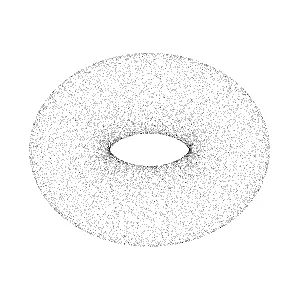
Multiple-view geometry
- Scene geometry (structure):
Given 2D point matches in two or more images, where are the corresponding points in 3D? - Correspondence (stereo matching):
Given a point in just one image, how does it constrain the position of the corresponding point in another image? - Camera geometry (motion):
Given a set of corresponding points in two or more images, what are the camera matrices for these views?
What do we need?
- Digital imagery;
- (Digital elevation model or topographic dataset);
- Exterior orientation parameters from aerial triangulation or IMU;
- (Camera calibration report);
- (Ground Control Points parameters);
- Photogrammetric processing software that utilizes collinearity equations.
Items in brackets are optional
Digital imagery


Digital Elevation Model

In the past: Shape of the ground surface must be known in order to remove the effects of relief displacement
Now: Computed automatically by Structure from Motion
Structure from Motion (SfM)
- Range imaging technique
- Process of estimating 3D structures from 2D image sequences
- May be coupled with local motion signals

Exterior orientation (EO)
EO = Position and orientation in the object space
6 elements necessary for any photogrammetric processing:
- X, Y, and Z of the exposure station position (latitude, longitude, and altitude of the camera)
- Angular orientation: ω, φ, and κ (yaw, pitch, and roll)

Flight log
- Log file contains elements of exterior orientation that are measured by onboard Inertial Measurement Unit (IMU) and written into a text file
- Sometimes (most DJI products) exterior orientation parameters are saved in photos’ EXIF file
- Log contains information about the location of the camera, not the location of the depicted object - more info in this section of lecture 3
Interior orientation
- In the past: camera calibration report
- Now: Self-calibration (auto-calibration) is the process of determining intrinsic camera parameters directly from uncalibrated images
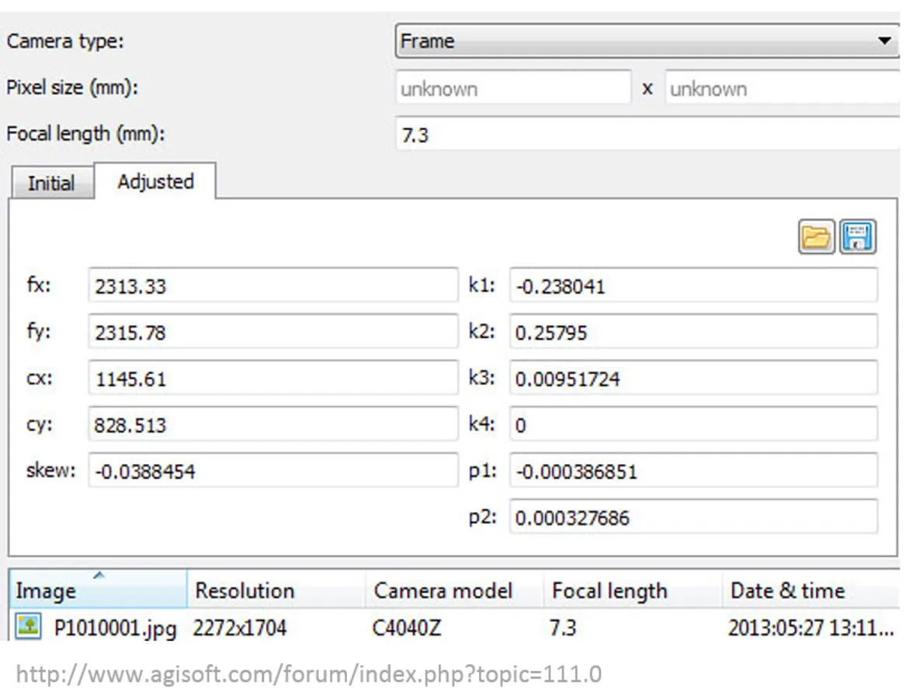
- Can be automatically derived using Structure from Motion (SfM) methods
Ground Control Points
- GCP - Target in the project area with known 3 coordinates (X, Y, Z or lat, long, alt)
- For more information about placing targets and importance of GCPs see this section of lecture 3
- For more information about processing the data with GCPs see intro to the assignment
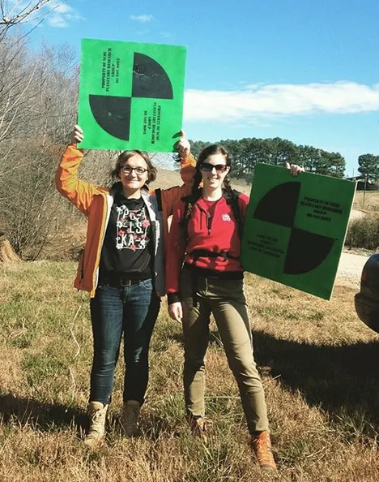
Processing options

Processing options
Everything boils down to… money (and time)
- What is my starting budget and equipment?
- How frequently will I fly?
- Do I have the experience/training necessary for processing (or am I able to hire people who do)?
- Do I have time to process the data by myself?
Processing options - software
- Agisoft Metashape
- Pix4D
- Trimble Business Center - Aerial Photogrammetry Module
- Drone2Map (ESRI)
- DroneMapper
- OpenDroneMap
- many many more…
Agisoft Metashape Professional
- Image-based solution aimed at creating 3D content from still images
- Operates with arbitrary images and is efficient in both controlled and uncontrolled conditions
- Both image alignment and 3D model reconstruction are fully automated
Processing workflow
Preprocessing stage:
- Loading photos into Metashape
- Inspecting loaded images, removing unnecessary images
Processing workflow
Processing stage:
- Aligning photos
- Building dense point cloud
- (optional: editing dense point cloud)
- Building mesh (3D polygonal model)
- (optional: editing mesh)
- Generating texture
- Building DSM and orthomosaic
Exporting results

Preprocessing
- Loading photos
- Loading camera positions (flight log)
- If the EO is in the photos EXIF file, the parameters will load automatically

Aligning photos
At this stage, Agisoft Metashape implements SfM algorithms to monitor the movement of features through a sequence of multiple images:
- Obtains the relative location of the acquisition positions
- Refines camera calibration parameters
- Sparse point cloud and a set of camera positions are formed
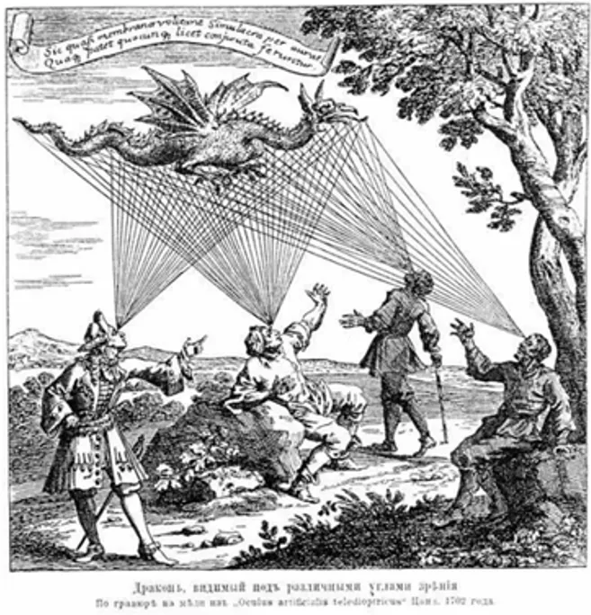
Bundle Block Adjustment
- Non-linear method for refining structure and motion
- Minimizing reprojection error
- Detecting image feature points (i.e., various geometrical similarities such as object edges or other specific details)
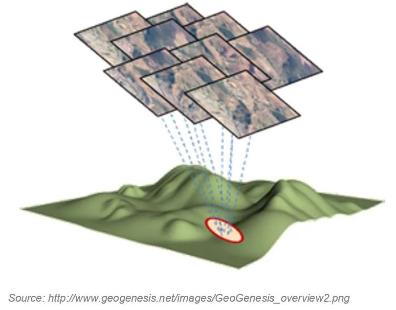
Bundle Block Adjustment
- Subsequently monitoring the movement of those points throughout the sequence of multiple images
- Using this information as input, the locations of those feature points can be estimated and rendered as a sparse 3D point cloud

Aligning cameras in Metashape


Sparse point cloud generation
Accuracy
- High accuracy setting > more accurate camera position estimates (time-consuming)
- Low accuracy setting > rough camera positions
Building dense point cloud
At the stage of dense point cloud generation, Agisoft calculates depth maps for every image
- Quality: Highest, High, Medium, Low, Lower > the higher quality, the more accurate camera position estimates, but the process is more time-consuming
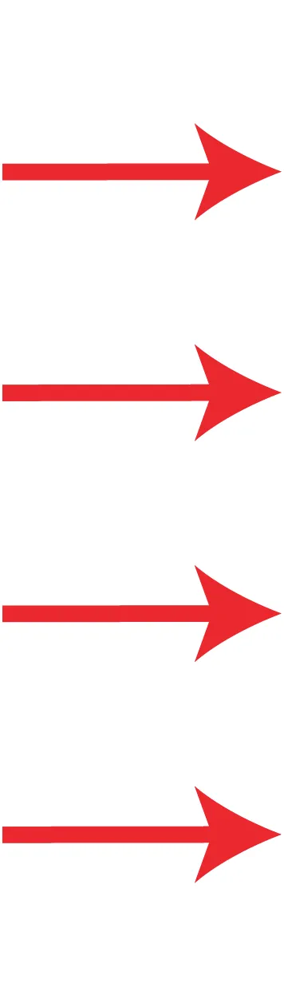

Building dense point cloud
Depth Filtering modes
Algorithms sorting outliers (due to some factors, like poor texture of some elements of the scene, noisy or badly focused images)
- Mild depth filtering mode > for complex geometry (numerous small details on the foreground), for important features not to be sorted out
- Aggressive depth filtering mode > sorting out most of the outliers
- Moderate depth filtering mode > results in between the Mild and Aggressive
Optional: Editing dense point cloud
- Manual points removal
- Automatic filtering based on applied masks
- Sparse cloud only:
- Reducing the number of points in the cloud by setting tie point per photo limit
- Automatic filtering based on:
- Reprojection error
- Reconstruction uncertainty
- Image count

Building mesh
- Arbitrary > for modeling of any kind of object
- Should be selected for closed objects (statues, buildings, etc.)
- Memory consumption: high

- High field > for modeling of planar surfaces
- Should be selected for aerial photography
- Memory consumption: low
- Allows for larger data sets processing
Building mesh
- Source data > the source for the mesh generation
- Sparse cloud > fast 3D model generation (low quality)
- Dense cloud > high-quality output based on the previously reconstructed dense point cloud
- Face count > the maximum face count in the final mesh

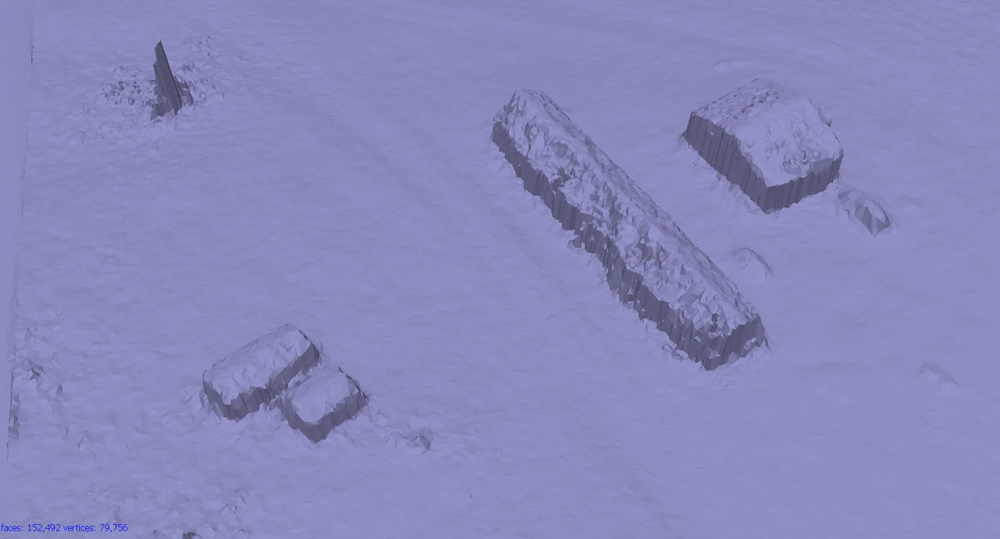
Optional: Editing mesh
- Close Holes tool > repairs your model if the reconstruction procedure resulted in a mesh with several holes, due to insufficient image overlap
- Necessary step for volumes calculation

- Decimation tool > decreases the geometric resolution of the model by replacing a high-resolution mesh with a lower resolution one
Optional: Editing mesh
- Automatic filtering based on specified criteria:
- Connected component size
- Polygon size
- Manual polygon removal
- Fixing mesh topology
- Editing mesh in the external program
- Export mesh for editing in the external program
- Import edited mesh
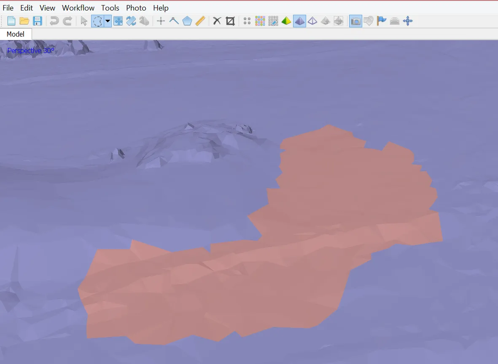

Generating texture
- Determines how the object texture will be packed in the texture atlas
- Affects the quality of the final model

- Texture mapping modes:
- Generic
- Adaptive orthophoto
- Orthophoto
- Spherical
- Single photo
- Keep uv
Texture mapping modes
Generic
- Creates as uniform texture as possible
Adaptive orthophoto
- The object surface split into the flat part and vertical regions
- The flat part of the surface textured using the orthographic projection, while vertical regions textured separately to maintain accurate texture representation in such regions
- More compact texture representation for nearly planar scenes + good texture quality for vertical surfaces
Texture mapping modes
Orthophoto
- The whole object surface textured in the orthographic projection
- Even more compact texture representation than the Adaptive orthophoto at the expense of texture quality in vertical regions
Spherical
- Only for objects that have a ball-like form
Single photo
- Texture from a single photo (photo can be selected from ‘Texture from’ list)
Keep uv
- Generates texture atlas using current texture parametrization; Rebuilding current texture with different resolution or generating the atlas parametrized in the external software
Generating DSM
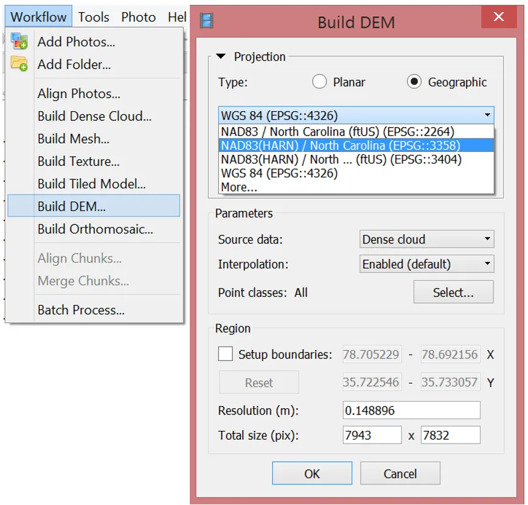
Parameters
- Source data: Dense point cloud
- Interpolation
- Disabled: leads to accurate reconstruction results since only areas corresponding to dense point cloud points are reconstructed
- Enabled (recommended): Interpolation mode - Agisoft will calculate DEM for all areas of the scene that are visible on at least one image.
Generating orthophoto
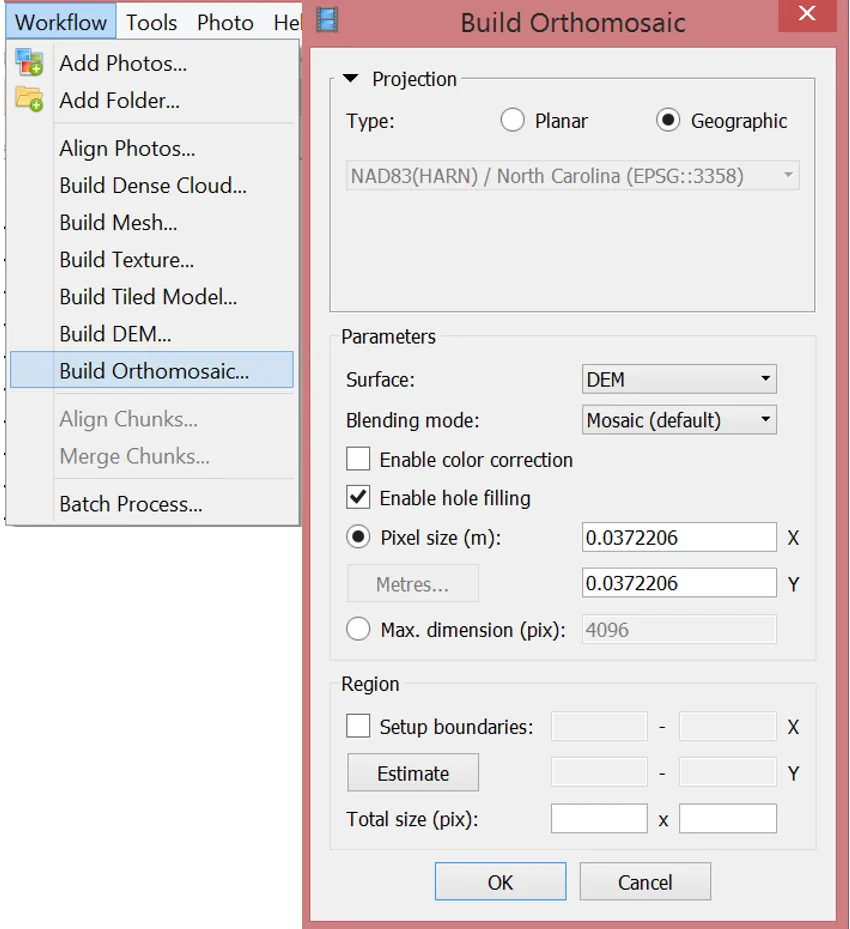
Parameters
- Surface: DEM
- Blending mode
- Mosaic (default): Implements an approach with data division into several frequency domains, which are blended independently
- Average: Uses the weighted average value of all pixels from individual photos
- Disabled: The color value for the pixel is taken from the photo with the camera view being almost along the normal to the reconstructed surface in that point.
Exporting results & saving intermediate results
Orthophoto export
Exporting results & saving intermediate results
DEM export

Exporting results & saving intermediate results
3D model export

Exporting results & saving intermediate results
Point cloud export

Exporting results & saving intermediate results
Processing report generation


Processing report
Includes:
- Orthophoto and digital elevation model sketch
- Camera parameters and survey scheme
- Tie points data export (matching points and panoramas)
- Image overlap statistics
- Camera positioning error estimates
- Ground control point error estimates

Batch processing
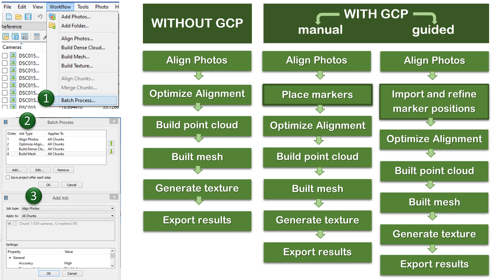
Quality processing with GCPs
- Marker positions are defined by their projections on the source photos
- After optimizing alignment based on markers, Point cloud generation and other steps need to be performed
- Used for:
- Setting up a coordinate system
- Photo alignment optimization
- Measuring distances and volumes
- Marker-based chunk alignment
- Used for:
- More on GCP placing and processing in Agisoft see intro to the assignment
What did we learn?
- What is a general workflow for UAS imagery processing
- How do we transform UAS data into orthophoto, DSM, 3D model, and point cloud
- How to process the data in Agisoft Metashape Professional and how to set proper parameters in the program